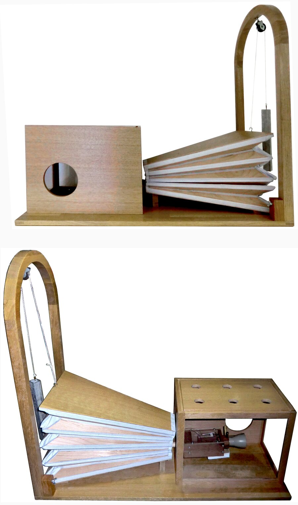

Speech came first.
History traced the ideas that made computation possible. The medium those ideas needed is language. Every language model is downstream of a biological accident: genomic evidence suggests the human capacity for language was present at least 135,000 years ago, and in widespread social use by 100,000 years ago.
The date comes from genetic and archaeological inference, not from a preserved organ of language; it is a range, not a timestamp. The human vocal tract can make a much wider range of sounds than those of other primates: the descended larynx, the vocal folds that sit in it, and fine motor control are part of the story, though the exact biological package is still debated. That made spoken language possible, and spoken language made culture cumulative.
Listening came first. The ear is built from an ancient hair cell, a cochlea, and a middle ear assembled from jaw bones; it is far older than speech. A fetus begins to hear before birth, and newborns prefer the voice and the stories they heard in the womb (Hepper and Shahidullah, 1994; DeCasper and Fifer, 1980). The channel that lets a child learn language was in place long before the first word was spoken.
But speech is evanescent. Writing, from c. 3200 BCE in Mesopotamia, turned it into something that could survive the speaker, travel across distance, and be re-read. It did not begin as literature. It grew out of accounting: clay tokens for goods, then marks pressed into tablets, then signs for the sounds of names. Oral tradition already used rhythm and story as memory technology; writing made memory external and inspectable.
From grammar to information.
Grammar was studied long before machines. Pāṇini's Aṣṭādhyāyī (c. 4th century BCE) is the most complete surviving formal grammar, but it was not the first. Vedic phonetic and grammatical analysis, the Prātiśākhyas, and Yāška's Nirukta precede it. Pāṇini matters here because he described a language as a finite rule system that generates an unbounded set of sentences: the same ambition a formal grammar has. Printing in Europe around 1440, dictionaries, and standardised spelling made text abundant and comparable.
In 1948, Shannon separated the message from its meaning and measured information in bits (Shannon, 1948). A bit is one yes/no answer; a message carries as much information as the uncertainty it removes. That move made language computable. A model does not need to understand a sentence to predict the next token; it needs a representation and a lot of text. That is the deflationary reading: whether prediction forces some internal model of the world is the contested part, not whether the training objective is prediction.
The last step is geometric, from word2vec (Mikolov et al., 2013) and subword tokenizers to modern embeddings, tokens become vectors, and meaning becomes a pattern of distances and directions. Word2vec's contribution was to make the old distributional intuition computable at scale: learn a vector by making it good at predicting a word's neighbours, or the neighbours from the word. The model inherits the whole stack (body, symbol, writing, information) and compresses it into weights.
From bellows to text-to-speech.
Wolfgang von Kempelen's speaking machine (1791) was the first serious attempt to build human speech from parts: a bellows for lungs, reeds for the larynx, and a leather mouth shaped by the operator's hand. It could say words and short phrases, and it made the point that speech is a physical process that can be engineered.
Kempelen's machine was mechanical, not digital, but it belongs to the same lineage as modern text-to-speech. The problem he posed, how to turn a stream of symbols into audible language, is still the problem a speech synthesizer solves.


From text to vectors.
Before a model can learn anything, text has to become a sequence of tokens. A tokenizer cuts the string into pieces from a fixed vocabulary: whole words, word fragments, punctuation, and bytes. The token ID is the only thing the model sees; the original characters are gone. That is why a model can be bad at spelling: it may never see the letters that make up a word, only the pieces the tokenizer chose.
Each token ID is looked up in an embedding table and becomes a vector. The table has one row per vocabulary item; a 100,000-token vocabulary with 4,000 dimensions is already 400 million numbers, before any transformer layer. The distributional idea is old: words that appear in similar contexts tend to have similar meanings (Firth, 1957), so their vectors end up close together. A direction in that space can carry a relationship, such as the direction from “man” to “woman”, but the famous analogy is an illustration, not a law. It works on some embeddings and some pairs, and fails on others.
That is the inheritance. Writing made text durable, Shannon made it measurable, and embeddings made it geometric. The model does not need a theory of language to learn the geometry; it needs enough text for the geometry to become useful. What it does need is a training signal, and that signal is prediction: the geometry is shaped by what makes the next token more likely, not by definitions.
The long fuse of language technology · demo
Follow the fuse from listening and speech to writing, grammar, printing, information, and tokens. Each step made text more durable, more comparable, or more computable.
One sentence, two worlds · demo
The syntax is fixed; the meaning is not. Click the highlighted phrase to switch readings. Context is the disambiguator.
The short version.
An LLM is the newest layer in a very old stack.
Body, symbol, writing, grammar, and information theory all had to exist before text could become training data.